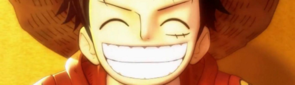

Roronoa Zoro le Chasseur de Pirates
Objectif: Devenir le plus grand sabreur du monde
Âge : 21 ans
Taille: 1m81
Voix originale:
Roronoa Zoro le Chasseur de Pirates est un pirate et un ex-chasseur de pirates. Il fait partie des 11 Supernovas.
Il fut le premier membre à rejoindre l'Équipage du Chapeau de Paille, il en est le premier et principal épéiste. Son ambition est de devenir le meilleur sabreur au monde et il a d'ailleurs montré une volonté de fer dans le but d'y parvenir. C'est un maître escrimeur qui peut utiliser plusieurs styles de combat dont la particularité repose sur le nombre d'épées, ses capacités au combat sont telles qu'il donne parfois l'impression aux personnes extérieures à l'équipage d'être le véritable Capitaine.
Ce sabreur a les cheveux verts et un physique assez impressionnant. Il arbore un bandana vert/noir foncé, qui est habituellement attaché à son bras gauche quand il ne se bat pas sérieusement, trois boucles d'oreilles ornent son oreille gauche et trois katanas sont attachés sur son flanc droit.
Il arbore certaines cicatrices qu'il s'est faite tout au long de son histoire. Celle qui barre tout son torse vient directement de Mihawk. Il en a deux autres à chaque cheville qui viennent de blessures qu'il s'était auto-infligée pour se libérer du piège de cire de Mr. 3 sur Little Garden jusqu'à ce que Luffy, Usopp et Karoo interviennent. Et après l'ellipse des deux ans on peut apercevoir une cicatrice sur son œil gauche, mystérieuse cicatrice avec laquelle il est revenu de son entraînement avec le Grand Corsaire.
Il se laisse peu vivre, il est tout le contraire d'enthousiaste ! Il profite de son temps libre sur le navire pour dormir, pour ne se réveiller que lorsqu'il se sent menacé. Sinon, il continue de dormir, même lorsque le navire affronte des tempêtes ou les changements violents de climat ; ce qui a le don d'agacer ses coéquipiers !
Il a peur de très peu de choses et possède une tendance à être prêt à tout pour remplir ses objectif.
Il se dispute toujours avec Sanji (son rival), déjà opposés dans leurs styles de combat respectifs (le combat au sabre pour l'un, les arts martiaux pour l'autre), le traitant de tous les noms possibles se rapportant à son physique ou à sa personnalité : "sourcils en vrille", "sourcils-escargots", "entortillé du sourcil", "blondinet", "cuistot du dimanche", "tu vas saigner du nez", "mauviette"... bien qu'il le complimente parfois dans son dos.
Il est très bagarreur et ne manque jamais une occasion de se battre. Il a toujours un sourire aux lèvres lorsqu'il s'apprête à combattre des ennemis très forts.
Zoro n'a aucun sens de l'orientation et se perd souvent, même quand le chemin est tout tracé (à Enies Lobby, Nami lui demande de monter un escalier, et part subitement vers la direction opposée...), il ne sait pas distinguer la gauche de la droite, pense que le nord est là où le vent est le plus froid (ou le point le plus haut d'une ville, comme à Alubarna)... Le comble de son défaut, c'est qu'il accuse toujours les autres de lui donner de fausses indications (et demande à être plus précis), ou de s'être eux-mêmes perdus.
| Techniques à 3 sabres: Santôryû | Description | Techniques à 2 sabres: Nitôryû | Description |
|---|---|---|---|
| Rokudo no Tsujil (À la Croisée des 6 Chemins) | Il coupe un tentacule du Kraken en six parties sans qu'il n'ait besoin de bouger | 720 Klesha Slash (Calibre 720) | Grâce à cette technique, Zoro peut trancher un ennemi à distance en créant une lame d'air avec son sabre |
| Rengoku Oni Giri (Demon Slash du Purgatoire) | Zoro attend que son ennemi arrive, puis le tranche en laissant une marque en X avec le sang de son ennemi. | Nigiri tower climb ripple (Nigiri Tourou Samon) | Technique utilisée pour trancher la poupée vaudou de Hawkins. |
| Ichidai Sanzen : Daisen Sekai | Une attaque qui peut trancher d'énormes masses de pierre (de la taille d'une ville) qui nécessite le Fluide offensif. | Falcon Wave (Taka Nami) | Le souffle déclenché en tirant rapidement deux sabres de leurs fourreaux permet d'atteindre des adversaires même éloignés et se propage. Parfait pour se débarrasser de sous-fifres. |
| Techniques à 1 sabres: Îttoryû | Description | Techniques à 9 sabres: Kitoryuu | Description |
| 36 Klesha Slash (Calibre 36) | Le nombre 36 a été inspiré par les six sens sous ses trois formes : bon, neutre ou mauvais, sachant que chaque forme est pur ou corrompu. | Kyutoryu Ashura Bakkei Moja No Tawamure (Ashura, Sabres au clair, Badineries d'outre-tombe) | Sous sa forme à trois têtes et six bras. Zoro utilise ses lames induites de Haki, pour taillader son adversaire et le blesser gravement. Cette technique a été utilisée sur Kaido |
| Danse du Lion (Shishi Sonson) | Zoro se concentre pour ressentir la "respiration" de toute chose qui l'entoure, et lance un seul coup net capable de trancher l'acier. | ||
| Hiryu Kaen (Dragon volant) | Zoro plonge sur son adversaire en étant entouré d'une aura représentant un dragon cracheur de feu. Puis le bretteur tranche son ennemi, dont la blessure s'enflamme instantanément. |